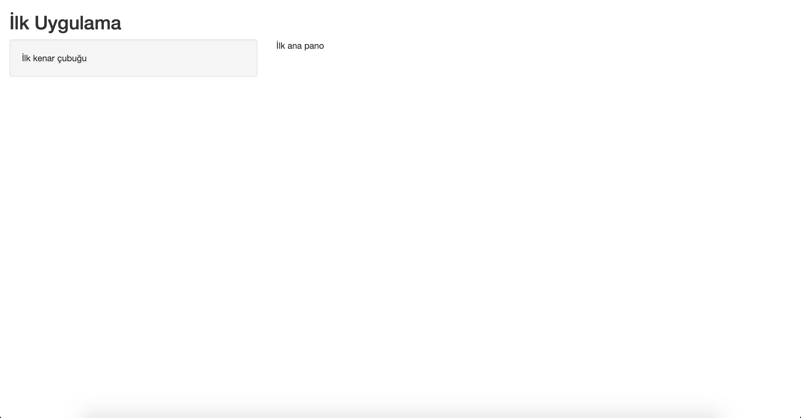
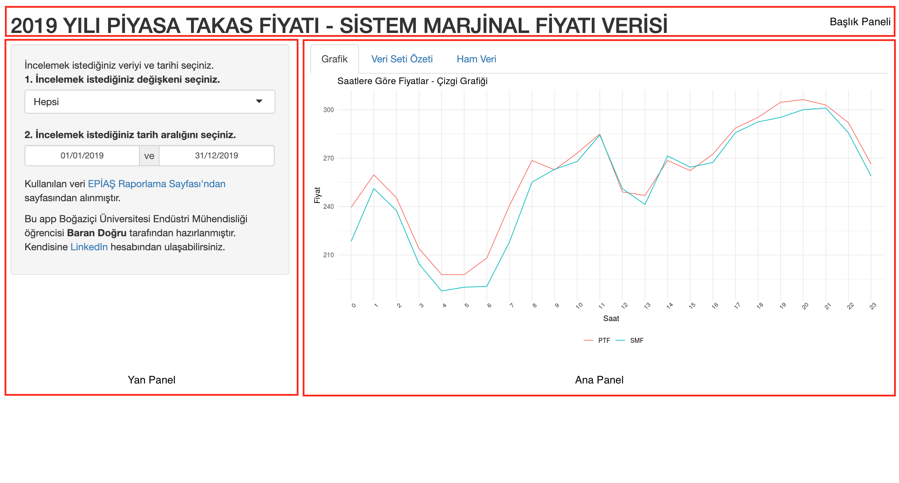
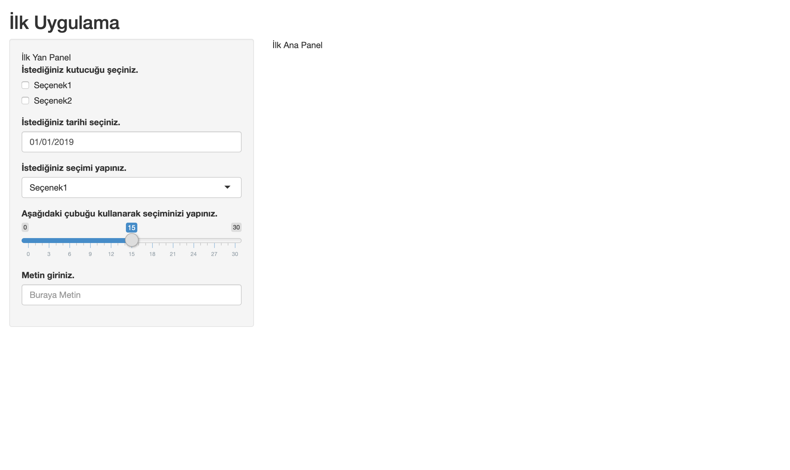
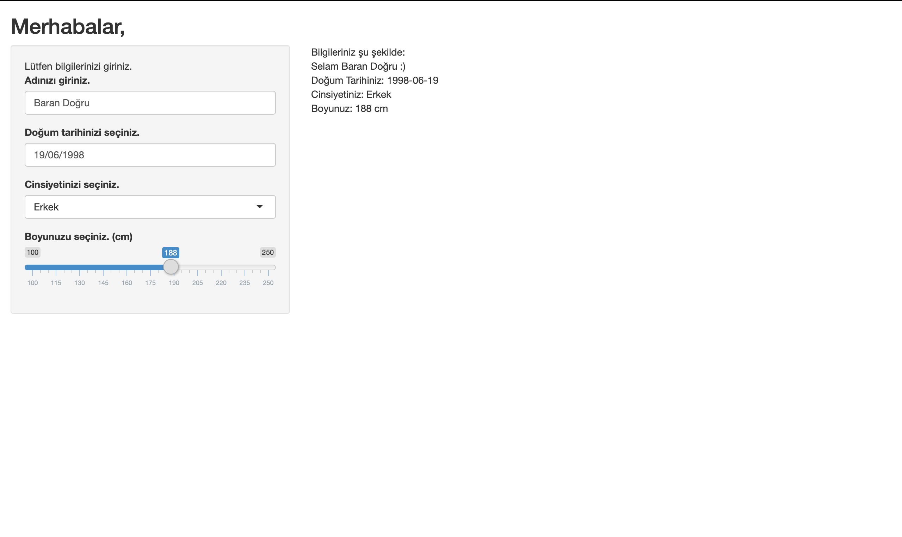

3 Shiny Uygulamasına Genel Bakış
Bu bölümde bir Shiny uygulamasının genel hatları ve önemli fonksiyonları detaylı şekilde anlatılacaktır. Her bir adımda gösterilen uygulamanın kodları paylaşılacak ve kullanılan yeni fonksiyonlar açıklanacaktır. Aynı zamanda uygulamaları çevrimiçi görüntüleyebilmeniz için de tek satırlık kodlar paylaşılacaktır.
3.1 Shiny Uygulamasının En Basit Hali
Uygulamanın açıklanmasına geçmeden önce uygulamaya göz atmanızı tavsiye ediyoruz. Uygulamayı çalıştırmak için aşağıdaki kodu çalıştırabilirsiniz. (library(shiny) komutunu bu aşamadan önce çalıştırdığınızdan emin olun.)
Karşınıza şu şeklide bir uygulama çıkmalı.

Şimdi ise daha önce İlk Shiny Uygulamasının Oluşturulması bölümünde anlattığımız şekilde yeni bir app.R belgesi oluşturun ve belgenin içini boşaltıp aşağıdaki kodu yapıştırdıktan sonra sağ üst kısımdan “Run App” butonuna tıklayın.
library(shiny)
# Kullanıcı arayüzünün tanımlanması
ui <- fluidPage(
# Uygulama başlığının girilmesi
titlePanel("İlk Uygulama"),
# Kenar çubuğunun tanımlanması
sidebarLayout(
sidebarPanel(("İlk kenar çubuğu")
),
# Ana panonun tanımlanması
mainPanel(("İlk ana pano")
)
)
)
# Arka planda işlemleri uygulayan "server"ın tanımlanması
server <- function(input, output) {
}
# Uygulamanın çalıştırılması
shinyApp(ui = ui, server = server)Aynı uygulamayı çalıştırdığınızı göreceksiniz. Bu uygulama bir Shiny uygulamasının alabileceği en basit hal. Burada yapılan işlemleri açıklayacak olursak,
Öncelikle
library(shiny)komutu ile Shiny paketi yükleniyor.Sonra uygulama içerisinde
uiveserveradında iki objenin içinde belirli özellikler tanımlanıyor. (Bu objeler ve tanımlanan özellikler ileride daha detaylı anlatılacaktır.)En sonda da “Run App” butonuna tıkladığınızda uygulamanın çalışmasını sağlayan
shinyApp(ui = ui, server = server)komutu çalıştırılıyor.
Şimdi bir Shiny uygulamasının genel hatlarını inceleyelim.
3.2 Shiny Uygulamasının Genel Hatları
Shiny uygulaması temel olarak ui yani kullanıcının karşısına çıkan kullanıcı arayüzü (“User Interface”) ve server yani programın arka planında işlemleri gerçekleştiren kısımlarından oluşur.
ui kısmı kullanıcının uygulamayı açtığında karşısına çıkan her şey, server kısmı ise arka planda yapılan bütün operasyonların merkezi olarak adlandırılabilir. Bir Shiny uygulaması temel olarak 3 kısımdan oluşur. Bu üç kısımın iletişimleri ise temel olarak şu şekildedir.
“Yan Panel” kullanıcı girdilerinin (input) alındığı kısımdır. Oluşturulacak interaktif web sitesi için kullanıcıların seçimler yaptığı ya da metinler / sayılar girdiği bölümdür. Alınan bu inputlar sonrasında ise “Ana Panel”de gösterilecek olan çıktıyı (output) oluşturmak üzere “Server” fonksiyonuna gönderilirler.
Yani özetle iletişimde aşağıdaki sıra izlenir.
\[ Yan Panel (Sidebar Panel) -> Server -> Ana Panel (Main Panel) \]
Kullanıcı karşısına çıkan bir Shiny uygulaması ise “Yan Panel”, “Ana Panel” ve “Başlık Panel”inden oluşur. Bu düzen aşağıdaki ekran görüntüsünde daha rahat görülebilir.
“Server” kısmının kullanıcı arayüzünde direkt bir karşılığı yoktur.

Şimdi ise bu iletişimlerin sürdürülmesini sağlayan kısımları ve kodları inceleyelim.
3.2.1 Yan Panel
Yan Panel’de tanımlanabilecek çok sayıda girdi (input) çeşidi vardır. Bu input çeşitlerinden bir kısmını kullanılan fonksiyon isimleri ile birlikte sıralayacak olursak,
Onay kutucukları koymak için
checkboxGroupInput()fonksiyonu,Tarih girdisi için
dateInput()ve tarih aralığı girdisi içindateRangeInput()fonksiyonu,Belirli opsiyonların açılan bir listede sıralanması için
selectInput()fonksiyonu,Kaydırma çubuğuyla girdi almak için
sliderInput(),Bir yazı girdisi almak için ise
textInput()fonksiyonları kullanılabilir.
Daha fazla input fonksiyonu için shiny Cheatsheet dökümanına göz atabilirsiniz.
Şimdi bu fonksiyonların örneklendirildiği uygulamayı çalıştırmak için aşağıdaki kodu çalıştırabilirsiniz.
Karşınıza şu şekilde bir uygulama çıkacak,

Bu uygulamanın R kodu ise aşağıdaki gibi,
library(shiny)
# Kullanıcı arayüzünün tanımlanması
ui <- fluidPage(
# Uygulama başlığının girilmesi
titlePanel("İlk Uygulama"),
# Kenar çubuğunun tanımlanması
sidebarLayout(
sidebarPanel(("İlk Yan Panel"),
checkboxGroupInput(inputId = "kutucuk", label = "İstediğiniz kutucuğu şeçiniz.",
choices = c("Seçenek1", "Seçenek2")),
dateInput(inputId = "tarih", label = "İstediğiniz tarihi seçiniz.",
min = "2019-01-01", max = "2019-12-31", value = "2019-01-01",
format="dd/mm/yyyy", language="tr", weekstart=1),
selectInput(inputId = "menü", label = "İstediğiniz seçimi yapınız.",
choices = c("Seçenek1", "Seçenek2")),
sliderInput(inputId = "kaydırmaCubugu",
label = "Aşağıdaki çubuğu kullanarak seçiminizi yapınız.",
min = 0, max = 30, value = 15),
textInput(inputId = "yazı", label = "Metin giriniz.", placeholder = "Buraya Metin")
),
# Ana panonun tanımlanması
mainPanel(("İlk Ana Panel")
)
)
)
# Arka planda işlemleri uygulayan "server"ın tanımlanması
server <- function(input, output) {
}
# Uygulamanın çalıştırılması
shinyApp(ui = ui, server = server)Şimdi bu kodun üzerinden beraber geçelim. Fark edilebileceği üzere Shiny Uygulamasının En Basit Hali bölümünden farklı olan tek kısım sidebarPanel() fonksiyonu, bu nedenle de uygulamanın herhangi bir çıktısı olmaması oldukça normal.
Bu input fonksiyonlarının tamamının ortak iki parametresi var,
inputIdvelabel.inputIdparametresi alınan inputun daha sonra “Server” kısmında kullanılabilmesi için o inputa yalnızca kodun bildiği bir isim vermek,labelparametresi ise kullanıcının karşısına çıkan mesajın oluşturulmasından sorumludur.Bu iki parametre dışında,
checkboxGroupInput()veselectInput()input fonksiyonlarınınchoicesadlı ortak bir parametreleri vardır. Bu parametre kullanıcının karşısına çıkacak seçeneklerin belirlenmesini sağlar.dateInput()fonksiyonunun isemin,max,value,format,language,format,weekstartgibi birçok parametresini görüyoruz. Bu parametreler sırasıyla minimum değerin belirlenmesi, maksimum değerin belirlenmesi, başlangıç değerinin belirlenmesi, gösterilecek tarihin dilinin seçilmesi, gösterilecek tarihin formatının belirlenmesi ve gösterilecek tarihte haftanın ilk gününün hangi gün olacağının belirlenmesinden sorumludur.sliderInput()fonksiyonununmin,maxvevalueolmak üzere 3 daha parametresini görüyoruz. Bu parametreler sırasıyla kaydırma çubuğunun minimum, maksimum ve başlangıç değerlerini belirlememizi sağlar.textInput()fonksiyonunun ise ek olarakplaceholderadında bir parametresini görüyoruz, bu parametre kullanıcı herhangi bir metin girmeden önce metin kutusunda yer alan “Yer Tutucu” metin olarak tanımlanabilir.
Bu fonksiyonların yukarıda bahsedilen parametreler dışında da pek çok parametresi olduğuna dikkat edilmelidir. Bu parametreler için shiny Cheatsheet dökümanına göz atabilirsiniz.
Şimdi ise bu inputların “Server” fonksiyonunda gerekli işlemlerden geçerek “Ana Panel”de nasıl yansıtıldığını inceleyelim. “Server” ve “Ana Panel” kısımları birbiriyle oldukça bağlantılı olduğundan bu kısımlar birlikte ele alınacaktır.
3.2.2 Server ve Ana Panel
Ana panelde birçok farklı çıktı formatı sergilenebilir. Bu farklı opsiyonlardan bahsetmeden önce “input”larla bu iki kısım arasındaki bağlantının nasıl çalıştığını incelemek adına örnek uygulamayı aşağıdaki kod yardımıyla çalıştırın.
Karşınıza şu şekilde bir uygulama çıkacak.

Siz de kendi bilgilerinizi girerek uygulamanın farklı çıktılar verdiğini gözlemleyebilirsiniz.
Şimdi ise bu uygulamanın koduna bakalım.
library(shiny)
# Kullanıcı arayüzünün tanımlanması
ui <- fluidPage(
# Uygulama başlığının girilmesi
titlePanel("Merhabalar,"),
# Kenar çubuğunun tanımlanması
sidebarLayout(
sidebarPanel(("Lütfen bilgilerinizi giriniz. "),
textInput(inputId = "yazı", label = "Adınızı giriniz.", placeholder = "Adınız"),
dateInput(inputId = "tarih", label = "Doğum tarihinizi seçiniz.",
min = "1975-01-01", max = "2019-12-31", value = "1975-01-01",
format="dd/mm/yyyy", language="tr", weekstart=1),
selectInput(inputId = "kutucuk", label = "Cinsiyetinizi seçiniz.",
choices = c("Kadın", "Erkek", "Diğer"), selected = NULL),
sliderInput(inputId = "kaydırmaCubugu",
label = "Boyunuzu seçiniz. (cm)",
min = 100, max = 250, value = 150)
),
# Ana panonun tanımlanması
mainPanel(("Bilgileriniz şu şekilde: "),
textOutput("text1"),
textOutput("text2"),
textOutput("text3"),
textOutput("text4")
)
)
)
# Arka planda işlemleri uygulayan "server"ın tanımlanması
server <- function(input, output) {
output$text1 <- renderText(paste("Selam ",as.character(input$yazı), " :)"))
output$text2 <- renderText(paste("Doğum Tarihiniz: ",as.character(input$tarih)))
output$text3 <- renderText(paste("Cinsiyetiniz: ",as.character(input$kutucuk)))
output$text4 <- renderText(paste("Boyunuz: ",as.character(input$kaydırmaCubugu), " cm"))
}
# Uygulamanın çalıştırılması
shinyApp(ui = ui, server = server)Burada bir daha “sidebarPanel” kısmındaki input alma süreci anlatılmayacaktır. “Input”lar alındıktan sonra “Server” içinde farklı render fonksiyonları ile (Bu örnekte yalnızca renderText fonksiyonu kullanılmıştır.) çağrılırlar. Bu çağrılma sırasında $ operatörü ve daha önce “Input” kısmında inputId parametresine verilen isim kullanılır. Daha sonra bunlar kullanıcının seçeceği farklı isimdeki “output” değişkenlerine eşitlenirler.
En sonda ise, bu “output” değişkenleri farklı output fonksiyonları (Bu örnekte yalnızca textOutput fonksiyonu kullanılmıştır.) içinde çağrılarak “Ana Panel”de gösterilmeleri sağlanır. Buradaki çağırma sırasında ise output fonksiyonu ile kullanılan $ operatörü sonrasında belirlenen isim kullanılır.
Temel olarak bir Shiny uygulamasının akışı şu şekilde ifade edilebilir.
\[ Input -> Render -> Output \]
Şimdi ise farklı render fonksiyonlarını ve onlarla bağlantılı olan output fonksiyonlarını aşağıda inceleyelim.
render fonksiyonları |
output fonksiyonları |
|---|---|
| renderText() | textOutput() |
| renderPrint() | verbatimTextOutput() |
| renderPlot() | plotOutput() |
| renderImage() | imageOutput() |
| renderTable() | tableOutput() |
Bu fonksiyonlar ve daha fazlası hakkında daha detaylı bilgi için shiny Cheatsheet dökümanına göz atabilirsiniz.
Shiny uygulamaları kullanıcının hayal gücü ve istekleri doğrultusunda şekillenmektedir ve çok kompleks uygulamalar oluşturmak da mümkündür. Bu dökümanda temel bir giriş yapılması hedeflenmiş, bundan sonrası kullanıcıya bırakılmıştır. Herhangi bir sorunuz olması durumunda kitabın yazarlarına Yazarlar Hakkında kısmında belirtilen iletişim bilgisinden ulaşabilirsiniz.